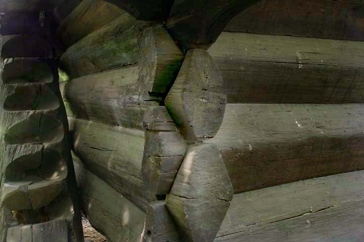
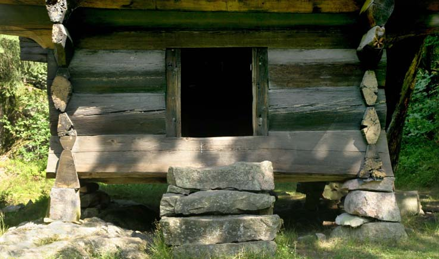

Vest-Agder Fylkesmuseum - Setesdalstunet
Foto: Torvald Slettebø, Universitetet i Agder, Seniorsenteret (2004)
Tekst, med tillatelse, fra museets årbok for 2001: "Fra hus til hus."
I det gamle bondesamfunnet var plasseringen av gårdsbebyggelsen ingen tilfeldighet. Hvert distrikt hadde sin måte å gruppere husene på. På Vestlandet var klyngetun det vanligste, i Trøndelag sto bygningene i et lukket firkanttun, mens gårdsbebyggelsen på Østlandet som regel var et åpent firkanttun. I Setesdal var det vanlig med en rekkebebyggelse der uthus og innhus var plassert i hver sin husrekke. Innhusene besto av boligen, loftet og stabburet, mens uthusene utgjorde fjøset, løa og stallen. Ofte var bygningene plassert på hver side av en bygdevei eller en annen ferdselsåre. Badstua, smia og andre bygninger med åpent ildsted lå på grunn av brannfaren gjerne et stykke fra den øvrige bebyggelsen. Kvernhuset lå ved en bekk i nærheten. I Setesdal ble alle bygninger laftet, og takene er konstruert med både åser og sperrer.
Setesdalstunet på Vest-Agder Fylkesmuseum er satt sammen av bygninger fra flere gårder. Alle bygningene er originale og plassert som et rekketun, slik det hadde vart naturlig å anlegge et tun i Setesdal for et par hundre år siden. Husene kommer fra gode gårder, og representerer noe av det beste i den setesdalske bygningskultur.
Nomelandsloftet, midt i bildet. Bygget: Antakelig 1620-årene Opprinnelig plassering: Nomeland, bruk nr. 3, Valle kommune, Aust-Agder. Flyttet til museet: 1905.
Et sagn forteller at det var svogeren til "Vonde-Åsmund" fra Rygnestad som bygde det store loftet.
Loftene fikk sin utforming i høymiddelalderen. Denne bygningstypen var den første som ble bygd i to etasjer i Norge. Arkeologiske utgravninger, blant annet på Bryggen i Bergen, viser at disse bygningene antakelig har sin typologiske forutsetning på Kontinentet. Gjennom middelalderbyene kom de til den norske landsbygd.
Noen mener stabburet har fått navn etter de fire stabbene huset hviler på. Andre mener navnet har sammenheng med stavkonstruksjonen. Stabburene er hevet fra grunnen for at smågnagere ikke skal komme inn i huset. En laftet tømrnerkjerne går gjennom alle tre etasjene. Husets kommunikasjon går alltid utenfor tømmerkjernen. Rundt hele andre og tredje etasje er det derfor en innebygd svalgang utenfor tømmerkjernen. Svalgangene er satt opp i stavteknikk. Det vil si at de bærende elementer er vertikale ledd i bygningen. Første etasje blir kalt bur, som rett og slett betyr bod, andre etasje blir kalt loft. I Setesdal blir gjerne hele bygningen kalt loft.
I loftets første etasje ble det oppbevart korn, flatbrød og øl. Kjøtt og fisk ble tørket, saltet og røykt før det ble satt inn i stabburet. Første etasje var altså forrådsrom for mat og drikke. I andre etasje ble klær og verdisaker oppbevart. Klær og tepper ble hengt over bjelker, mens mindre ting ble lagt i esker og kister. Man anså loftet for å være sikkert mot brann, siden det ikke var ildsted i bygningen. Derfor oppbevarte bonden gjerne dokumenter som skjøter, verdipapir og privilegiebrev i kister på loftet. I andre etasje kunne det også være plassert gjestesenger. Disse ble bare brukt om sommeren.
Nomelandsloftet ble flyttet til museet i 1905 fra bruk nr. 3 på gården Nomeland i Valle. Denne garden ligger på vestsiden av elva. Dendrokronoloaiske undersøkelser og skriftlige kilder tyder på at loftet er fra 1620-årene. Loftet er bygd med svært stort og fint furutømmer. Stokkene er ovaleteljet. Denne ovale hoggingen av kjempestokker ble en folkelig byggeskikk i Setesdal som holdt seg helt til 1800-tallet. Laftehodene var husets pryd, og Nomelandsloftet har fått fine rissede linjer langs kantene på middelaldersk maner. Hjørnestavene i svalgangen er også fint utført med artikulerte former. Beitskiene på hoveddøren inn til andre etasje, som ikke er synlige fra tunet, er utstyrt med såkalte kandelabersøyler. Disse søylenes overdel og underdel er fint koniske, og midten er framhevet av to tykke, vridde ringer i delikat utførelse. Taket er torvlagt som tradisjonen tilsa.
Om dette loftet forteller Johannes Skar i boken Gamalt or Sætesdal: Den kjente "Vonde-Åsmund" fra Rygnestad forlovet seg med ei jente fra Nomeland. Hun skulle vente på ham i sju år mens han var i utlandet. Da tiden gikk ut og Åsmund ikke var kommet hjem, skulle hun giftes med en gårdskar på Nomeland. Men Åsmund kom likevel hjem i siste liten før hun ble gift, og tok henne med seg. Men senere ga Åsmund denne mannen søsteren sin til kone, og sa: Nå må du komme til Rygnestad og hogge tømmer og sette opp et loft, men bygger du ikke slik at det aldri har vært sett maken, så brenner jeg hele bygningen opp. Svogeren satte opp et loft. Det var på tre etasjer, og det står ennå på Nomeland, forteller Skar. Men siden ble det altså flyttet til Vest-Agder Fylkesmuseum.
Det var Olav Såvesson Nomeland som eide gården da loftet ble solgt til museet. I 1900 besto hans husstand av åtte personer. Selv var han da føderaadsmand og hadde kår på gården. Det var sønnen Torjus og hans kone Petra som da hadde overtatt gårdsdriften.
Årestua fa Kveste eller Kvestad sont gården ofte blir kult, er bygd på slutten av 1600-tallet.
Årestua er museets nest eldste bygning. Som bygningstype går årestua tilbake til middelalderen.
Årestua har tre rom: En forstue, en stor stue og en liten kove bak forstua. I forstua hang klær og smågjenstander som ikke skulle være med inn i huset. Koven ble brukt til oppbevaring av forskjellige ting som smørkjerne, melkekar o.l. Fra koven går det en trapp opp til et lite loftsrom over forstuen. Det ble ofte brukt som lager.
Åren har ingen skorstein. Røyken måtte slippes ut igjennom en åpning i taket. Denne åpningen ble kalt ljore. Luka over ljoren besto av en trerarnme som det var spent et stykke kalvehud over. Årestuene kunne aldri være på mer enn en etasje, siden ildstedet ikke hadde skorstein. Vinduer fantes ikke i disse stuene. Glass var dyrt, og åpninger i veggen ville ødelegge røykens løp mot ljoren.
På gården Kveste eller Kvestad, som den også kalles, er det flere bruk. Årestua kommer fra bruk nr. 2 som bærer navnet Uppigard. Dette bruket ligger på den øverste delen av Kveste. I 1875 hadde Torleiv, som eide bruket, en hest, elleve kyr, 26 sauer og 18 geiter. Det var sønnen til Torleiv, Olav Kvestad (f.1866), som solgte årestua til Kristianssands Folkemusæum.
Da Olav Kvestad solgte årestua, var den gammel og ubrukelig som bolig. Den ble brukt som eldhus og bakstehus. Våningshuset som sto på gården var svært likt nystua fra Trydal.

Selve huset er satt opp i lafteteknikk av store furustokker. Langs siden er det oppbygd en svalgang i stavteknikk. Denne svalgangen har opprinnelig vært innebygd. De to horisontale stavene er dekorert: Den ene med en gotiserende ranke, den andre med geometrisk mønster. Taket har et underlag av never som er blitt dekket av torv og gress. Dette var vanlig i Agders indre bygder
Midt i stua er et åpent ildsted som kalles åre. Det er dette ildstedet som har gitt bygningen navn. Åren har store steiner i bunnen med mindre steiner og grus øverst. Rundt åren er det en karm av tre. Åren magasinerte ikke varme slik som røykovnen i badstua. Det ble derfor kaldt i rommet når ilden var utdødd.
Ved åren står en benk med ryggstø. Den kalles en brygdebenk. Brugde betyr ryggstø. På ryggen kunne det ofte være fine utskjæringer.
Over ildstedet henger en svingbar bjelke, gøya. Enden av gøya er formet som et ormehode. På denne bjelken hang skoren eller skjæringen av jern. Skoren kunne reguleres opp og ned slik at gryta kom lenger fra eller nærmere ilden.
Sengene var veggfaste og korte, ettersom folk lå høyt med hodet. Det lå gjerne to i hver seng.
Langs veggene i den innerste delen av stua er det faste benker. Langbordet er ca. 70 cm bredt og laget av en tømmerstokk. Langbenken foran bordet var kvinnenes benk. Den har flere hull i hver kortende. I disse hullene stakk de håndrokken når den ikke var i bruk. Mennenes plass var bak bordet mot veggen, men husbonden selv satt ved den kortenden som vendte mot tunet.

Loft fra Kveste, bygget på slutten av 1600-tallet. Opprinnelig plassering: Kveste, Valle kommune, Aust-Agder. Flyttet til museet: 1902.
Loftet som står sør for årestua blir kalt Kvesteloftet. Det er på to etasjer og oppbygd etter samme prinsipp som Nomelandsloftet. En tømmerkjerne går gjennom to etasjer. Bygningen hviler på fire steiner. Disse steinene ble kalt hoonsteini. Det ble derfor luft under bygningen. Rundt den laftede tømmerkjernen i andre etasje går en svalgang, loptsvolin som de sier i Setesdal. Den er satt opp av stolper og reisverk, og er tett rundt alle veggene unntatt på forsiden, hvor det er tre bueformede åpninger. En utvendig trapp fører opp til svalgangen. Inngangsdørene til begge etasjer, bursdøn og loptsdøn, er plassert på forsiden av bygningen.
Loftet fra Kveste kommer fra samme bruk som årestua, altså fra Uppigard-Kvestad. Det ble flyttet til Kristiansand samtidig med årestua, og sto ferdig da Kristianssands Folkemusæum ble åpnet i 1903. Det er usikkert hvor gammelt loftet er, men antakelig er det fra århundreskiftet 1600-1700.
 Fra venstre: Fjøs, løe og stall.
Til høyre stall fra Rike, bygget: I800-tallet.Opprinnelig plassering: Rike, Valle kommune, Aust-Agder. Flyttet til museet: 1950.
I det gamle bondesamfunnet hadde hver funksjon sin bygning. Hesteholdet hadde også sin. Hestestallen er en liten laftet bygning som kan huse to hester. Inngangsdøra er lav, men plassert så høyt på den ene gavlveggen at hestene kunne komme greit inn og ut. Stallen kommer fra Rike i Valle. Som alle bygningene i det gamle Setesdal er taket tekket med torv.
Løe fra Bjørgum, bygget: Siste del av 1700-tallet. Opprinnelig pla.ssering: Bjørgum, Valle kommune, Aust-Agder Flvttet til museet: 1950.
Løene var som tredelt som denne fra Bjørgum. Til venstre høyløa, til høyre kornløa og i midten låven. Løa på museets Setesdalstun kommer fra gården Bjørgum i Hylestad som nå er en del av Valle kommune. Den ble innkjopt i 1940 fra gården til byggmester Torleiv J. Bjørgum. Bygningen ble lagret på Bjørgum i flere år for den ble flyttet og gjenreist på det påbegynte Setesdalstunet på Kongsgârd.
Løa er delt i tre seksjoner, med siderommene som de egentlige løer. Rommet i midten er låven med treskegulv.
Til venstre har vi høyløa. Her ble høyet oppbevart etter at det var slått og tørket. Det begrensede volum tilsier at det ikke kunne oppbevares nok høy her til en lang vinter med stor dyrebesetning. Imidlertid hadde man høyslått på stoylene og i utmarka, og høyet ble oppbevart i mindre utmarksløer eller i stakker for å føres til gårds vinterstid på sledeføre.
Til høyre har vi kornløa. Her ble kornbandene oppbevart til de ble tresket på låvegulvet. Etter hvert ble kornet tørket i badstua og malt på bekkekverna når det var tilstrekkelig vassforing.
Fjøs fra Rike, bygget på 1800-tallet
Opprinnelig plassering: Rike, Valle kommune, Aust-Agder. Flyttet til museet: 1950.
I Setesdal var nesten alle bygninger satt opp med laftet tømmer og tak med torv.
Fjøset kom til Vest-Agder Fylkesmuseum samtidig med stallen. Det er ikke kjent hvor gamle disse to driftsbygningene er, men man vet at slike bygninger aldri ble riktig gamle. Fuktigheten fra dyrene forte til mye råtedannelse. Antakelig er både fjøs og stall fra 1800-tallet. Fjøset er satt opp av stort dimensjonert tømmer.
Fjøset er bygd i to deler. Den ene delen består av et stort fjøs med båser til kyrne. Den andre delen som ligger i forlengelsen av fjøset er et sauefjos, i bakgrunnen av bildet. Dette fjøset ligger lavere enn kufjøset. Over sauefjøset er det en hems hvor høyet var plassert før det ble skyflet ned til dyrene. I kufjoset er det satt opp en skorstein med ildsted. Der varmet man vann til dyrene i "tøysegryta".

Ildstedet og varmen fra dyrene gjorde det populært â overnatte på høytrevet.
Sauefjøset.
Bur fra Kjelleberg, bygget: 1700-tallet. Opprinnelig plassering: Kjelleberg, Valle kommune, Aust-Agder. Flyttet til museet: i 1950-årene.
I Kjellebergburet er hjørnestavene konkave og dørstokkene konvekse. Det gir fasaden en fin rytmikk.
Dette er en gammel type bur i en etasje. På sin opprinnelige plass var Kjellebergburet et såkalt stolpebur. Disse burene stod tildels på høye stolper, slik at det åpne rommet under ble oppbevaringsplass for kjerrer, hesjestaur og annet redskap. Dette gjorde at bygningen ble tørr og luftig, og godt egnet til oppbevaring av matvarer. Buret er laftet med furutømmer i store dimensjoner. Foran buret ligger en svalgang som er bygd i stavteknikk. Fasaden har et fint konstruktivt spill av horisontale og vertikale ledd, og av konvekse og konkave elementer. Døren har geometriske dekorasjoner risset inn på frontsiden, og beitskiene bukter ut med fine utskjæringer.
Bygningen kommer fra Nordstog, Kjelleberg i Valle. Den ble innkjøpt til museet fra Bjørgulv O. Kjelleberg i 1943. Selgeren påtok seg å ta vare på bygninen til «krigen er slutt og tilstandi hev jamna seg», som det står i kjøpekontrakten . Buret ble flyttet til Kongsgård i forbindelse med oppbyggingen av Setesdalstunet i begynnelsen av 1950-årene.
Badstue fra Åraksbø, bygget på 1700-tallet. Opprinnelig plassering: ÅraksbØ, Bygland kommune, Setesdal Flyttet til museet: 1950-årene. Badstua sto gjerne litt for seg selv på gården for å unngå brann i andre bygninger om ulykken skulle være ute.
Hver gård hadde gjerne ei badstue. Museets bygning er laftebygd og har et fremspringende tak i gavlveggen. Under dette taket ble det stablet ved til ovnen inne i huset. Familien på gården tok dampbad en gang i uken, som regel var det på lørdagen. Navnet lørdag kommer av det gammelnorske laugardag som betyr badedag.
Ovnen i badstua er en røykovn uten skorstein. Den er bygd opp av gråstein som lagrer varmen. Ovnen er åpen foran. Det måtte et par dagers fyring til før steinene var varme nok til badet. Når steinene var varme, lot man ilden dø ut. Røyken ble luftet ut gjennom døren og gluggene i veggene før de ble lukket igjen. Så kledde man av seg og slo vann på steinene slik at rommet ble fylt med damp. Pallene på siden kunne man ligge på. Folk tok gjerne med seg bjerkekvaster som de pisket kroppen med og en bøtte vann til avkjøling. Hele familien med menn, kvinner og barn badet sammen. På begynnelsen av 1800-tallet hadde de fleste sluttet med å ta badstubad. En av grunnene var de religiøse vekkelsesbevegelsene som gikk over landet. Mange gamle skikker ble da fordømt. De indre bygder av Agder holdt lengst på badstuetradisjonen. Den kjente folkelivsgranskeren Eilert Sundt traff flere som husket at deres foreldre hadde badet i badstua, og i 1866 besøkte han en mann i Åseral som hadde sluttet noen år tidligere. Denne mannen skulle være den siste som praktiserte badstueskikken.
Men badstua fortsatte med ny funksjon. På mange gårder i Setesdal ble badstua til korntørke. Kornet ble lagt ut over pallene, det ble fyrt i ovnen, men ikke slått vann på steinene. Skinnfeller ble også lagt inn i den gamle badstua for å bli renset for lopper og annet utøy.
Badstua på Vest-Agder Fylkesmuseet kommer fra Åraksbø i Bygland kommune. Den er bygd som badstue på 1700-tallet, men ombygd på tradisjonell måte til korntørke på 1800-tallet.
Kvernhus fra Grindheim, bygget første halvdel av 1800-tallet. Opprinnelig plassering: Refsnes, Grindheim, Audnedal kommune, Vest-Agder Flyttet til museet: 1909.
Det var i middelalderen vannkraften for alvor ble tatt i bruk i Norge. I denne første industrielle revolusjonen tok bøndene i bruk både kvernkall og mølle for å male korn til mel.
Kvernhuset fra Grindheim er laftet av furutømmer med torvtekt tak. Brukshusene behøvde ikke være så fine og tette i laftet som bolighusene. Det forklarer den ujevne tømringen i kvernhuset. Bygningen har bare ett rom og en etasje. Den tekniske innretningen er intakt med de to motliggende kvernsteinene som malte kornet, overliggeren og underliggeren, jerntappen med forbindelse til kvernkallen i bekken og den skråstilte kassen som kornet rant ned i. Derimot mangler selve kvernkallen, tømmerstokken med skovlhjul som ble drevet rundt av vankraften. Dette kvernhuset stod opprinnelig i Kvernhusbekken som rant ut i Øydnavannet ved Refsnesgårdene. To andre kvernhus sto der også. Det var ikke ualminnelig at flere kverner sto på rekke og rad langs en bekk med god vannføring. Det gamle navnet «Kvinnhusægrå» på Refsnes minner ennå om virksomheten som har forgått der. De fleste gårder hadde sin egen bekkekvern. De bøndene som ikke hadde egen kvern måtte betale for å male kornet sitt hos naboen.
Kvernhuset fra Refsnes ble allerede i 1909 gitt som gave til museet, men det ble ikke aktuelt å flytte det før museet ble flyttet til Kongsgård i 1950-årene. Kvernkallen var da i svært dårlig forfatning.
Kverna som står og maler på havsens bunn heter et kjent eventyr fra Asbjørnsen og Moes samlinger. I det hele tatt går kvernene ofte igjen i både sagn og eventyr. Det har sikkert sammenheng med at dyrking av korn og maling til mel var viktige sider av selvbergingssamfunnet. Korn kunne skape rikdom og makt, og korn var det viktigste matemnet i bondehusholdningen. Men det var også en viss mystikk knyttet til mølleren når han under flomtiden om høsten og våren stod og malte. Det durte og buldret, vannet fosset og sprutet i vannrenna som førte ned til skovlene, og de to kvernsteinene hvinte i takt med rotasjonen.
Maling av korn, først og fremst bygg og havre, har naturligvis vært viktig helt siden folk begynte med åkerdyrking her i landet for vel 6000 år siden. I forhistorisk tid utviklet bøndene forskjellige metoder for å male mel. Tidlig ble håndkvernen funnet opp. Den besto av to mindre runde steiner som lå over hverandre. Kornet ble lagt imellom, og den øverste steinen ble drevet rundt med håndkraft til kornet var malt. Dette var kvinnenes arbeid. Men på I 100-tallet skjedde en liten revolusjon i Europa. Folk lærte å utnytte vannkraften. Kverner, møller og stamper kunne nå drives mekanisk. Det ble også mulig å male langt større mengder mel av gangen enn tidligere, og mennene overtok maleprosessen. Den nye produksjonsmåten forte også til andre typer brød som flatbrød og lefse. Disse kunne lagres over over lengre tid på stabburet.